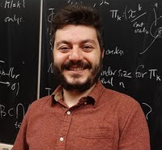

Community
Our Community
This site uses AI. But it is connected with the community and actively asks for comments, feedback, and contributions. The site is an experiment. We are leveraging AI to scale usable information and education around R. But by fully including the community, this information has confidence and authority that only comes from true human expertise.
AI is generating content at an unprecedented scale, but there’s a major problem: it’s often wrong. For technical content, ‘wrong’ isn’t just embarrassing, it’s negative value. A waste of time. In this experiment, we are solving this major issue by treating errors in AI content like bugs in software. We’ve essentially built a ‘bug bounty’ platform for content, connecting AI-generated articles to the global R community of vetted developers who get paid to find and fix inaccuracies.
The scale of AI with the trust of human verification, with the goal of creating scalable quality assurance in the AI era.
Here’s what developers have to say!
Lito Cruz
Sleekersoft Pty/Ltd
Referring to the article (Statistical Modeling: Why R Outperforms Python)… indeed, the statistical side and maturity of R over Python in the field of statistical modeling should be obvious to one who is using both R and Python, unless one is a fanatically bigotted to Python. From a personal experience I can attest to this. For example I used latent class modeling one time and the packages here in R is quite sophisticated and well developed. Python has 1 while R has about 3 you can choose from. For people who have statistics and machine learning on their belt this advantage of R should not be overlooked and in fact it is precisely the reason why I personally choose R. For just in case my problem may be better solved by statistical methods, I got R already right there to catch my need.
About statistical tools
The present crop of data scientists are weak when it comes to statistical methods. Their focus of education is on machine learning and this makes them woefully at a disadvantage because some problems are better solved statistically - not everything is about prediction. In this regard when it comes to unsupervised learning, there are more statistical tools in this area than there are in ML. However, R covers this side quite healthily. To illustrate, try comparing the number of mix model packages in R vs Python, R beats Python here.
His recommendations to improve content:
The About section is very informative and gives the reader what to expect from the site. In this way it is well appreciated - just a reminder though that the site should indeed provide examples what it is saying it will supply, ie for example the items in 1.3 - hopefully there is at least 1 example in the website before it is launched and made public.
His opinion on the podcast:
Very impressive arguments and establishes the point of the title of the talk. The arguments proves the thesis of the talk.
Ozan Evkaya
University of Edinburgh / R-user group Edinburgh

Some parts feel like generic in terms of explanation, can be more explicit. Mission can be more shortened and targeting one or two at most from the given list Under 1.3 it says Side-by-side analysis so if this is the case code-output pairs should be presented in each of the other related topic blogs in my view.
His opinion on the podcast:
Sounds interesting, well structured but I can feel that generated by AI if I am not wrong : ) Cool supplementary material indeed as a podcast as long as the main content is actually is human written I believe but I can not prove: D I guess there should be some fact chacking since it said Journal of Statistical Software by Biometrics If I heard correctly, this should not be the truth as I checked.
His recommendations to improve content:
For Data Visualization: R’s ggplot2 vs Python’s matplotlib: For this part “While Python has made progress with libraries like matplotlib, seaborn, and plotly” good to mention nineplot as the alternative of ggplot in python but it seems still limited, also good to highlight altair package in python in addition to seaborn. Better to add their links
Good to have clickable code and output, directly visible but still with just one example 2.1 and 2.2 comparison does not make sense to me, maybe good to give couple of examples and share the code in R and python side by side
Good to share their codes and outputs together and maybe it is better to mention their pros and cons via both coding and outcome side Possibly some of the functions in nineplot can reduce the complexity on the created code examples but good to search and double check
Shinny discussion can be be obsolote since Posit made shiny available for python at a certain level during the last couple of years, I might be careful about this section in general
In general for me, the list given in 7.3 is incomplete when I think about the ggplot extensions gallery. For part 8, in my understanding, altair in python is a kind of declarative package so python column seems like missing wrt the available packages out there and can be misleading in terms of the given information
Simisani Ndaba
University of Botswana, co-founder and co-organizer of the R-Ladies Gaborone group
Overall the R Beats Python site has a clear and thoughtful mission which is to “provide a reasoned and evidence-based comparison of R vs. python”. It argues, and makes a compelling case, for the future of R in statistical computing and research in the industries and academia with some examples and insights into specific areas. In general, the site seems well placed to serve as a resource for data professionals looking for more sophisticated options for picking tools.
I think the article (Statistical Modeling: Why R Outperforms Python) is a technically capable and well written discussion of statistical modeling in R versus Python. It makes a case for R’s primacy in inferential statistics and somewhat acknowledges Python’s advancements. The Python-side would be more complete with some executable code snippets as well as a more thorough discussion of performance and specialized modeling scenarios, which would appeal to technically-oriented data professionals.
Her opinion on the podcast:
The hosts have a solid grasp of R, not just in terms of its technical capabilities, but also more importantly, how and when it should be used in academia, providing great examples of situations in which R is and will remain necessary to many scholars. The discussion is at a sweet spot along the technical-to-accessible spectrum; it is technical enough to convey the message that R is good for specific things but does not imply that Python is uninviting. In summary, it is a well-produced and well-paced podcast that makes the case for R’s continued place in the statistics academy in an interesting way.
Ridwan Suleiman Adejumo
College of Nursing Science, Federal Teaching Hospital, Gombe, Nigeria - Data Scientist and Biostatistician
This is great, as the number of individuals trying to learn R is declining, and most people think R is meant for those in academia or Pharma. I think instead of showing R strengths, places where Python excel like llm development, prompt engineering, and AI agent development should be emphasized in R. Most individuals are not familiar that R can also do a lot of these things.
Web development should not also be left behind, like developing APIs and backend applications with R.
His recommendations to improve content:
The article (Statistical Modeling: Why R Outperforms Python) lacks proper explanation of what’s happening in the code, and there is not test to actually measure the strengths and weakness of Python and R.
His opinion on the podcast:
I like the podcast, and it’s clear and interactive. The presenters explained a lot of the strengths of R.
Florian Schwendinger
Vienna R User Group organizer
** His opinion on the main message
In general I would not claim R beats Python, they are different tools for different tasks and audiences. Therefore I would advise all young data scientists to learn both languages.
His opinion of the main advantages of R
The main advantages of R over Python which immediately come to my mind are:
From the language design perspective:
- R has builtin NA for all of its vectors, in Python numpy is typically used which has no NA support, but only NaN for floats. This has the consequence that if you use pandas with numpy and you have an integer column with missing values, pandas will convert it to a float column so it can represent the missing values.
- R has builtin objects for the support of categorical and ordinal variables, via factor and ordered factor. Therefore, R can make more informed decisions when building model matrices and graphics. One can observe this by reading a machine learning book in Python, where they always explain at length one hot encoding and how to do it right. In R it is not a big topic since it is done automatically when you build the model matrix.
- R is much more high level, often you can do in R with one line what in Python takes you at least 3 lines.
- In R generics are common practice which makes it easier to write extensions for existing packages.
- In R packages are loaded into a special environment not stored as variable the global environment. This prevents name collisions.
More community testimonials and feedback will be added here as we grow.
Join our community and help shape the future of R Beats Python. If you are interested, please fill out this form to provide your opinion.